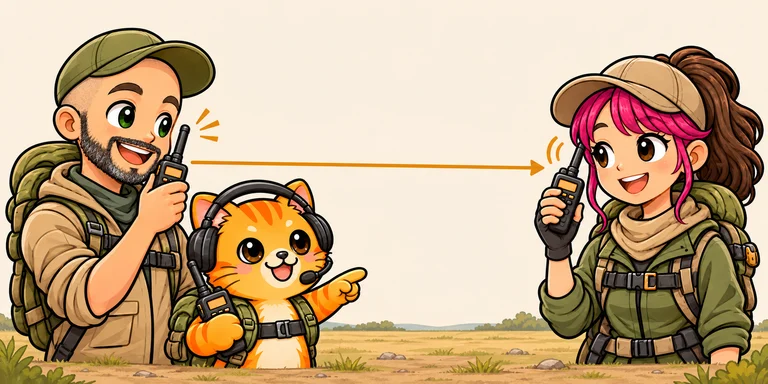
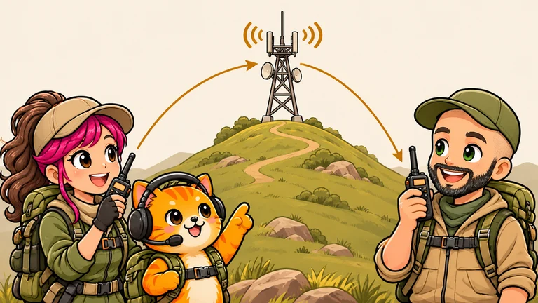

Simplex · de radio a radio

La misma frecuencia para escuchar y hablar.
- Escuchas · RX
- 146.520 MHz
- Hablas · TX
- 146.520 MHz

Rufis te lo explica

La misma frecuencia para escuchar y hablar.

Amplía el alcance: puedes hablar y escuchar a estaciones más lejanas.
Escuchas por una frecuencia y hablas por otra.
Cambia la visualización de la misma memoria, sin pasar a frecuencia libre (VFO). Mostrar TX depende del modelo; también puedes revisar RX/TX en el menú o en CHIRP, sin transmitir.
Los números del ejemplo están vistos desde tu radio. RX y TX distintos indican la configuración habitual para repetidor VHF/UHF; confirma los datos en su ficha.